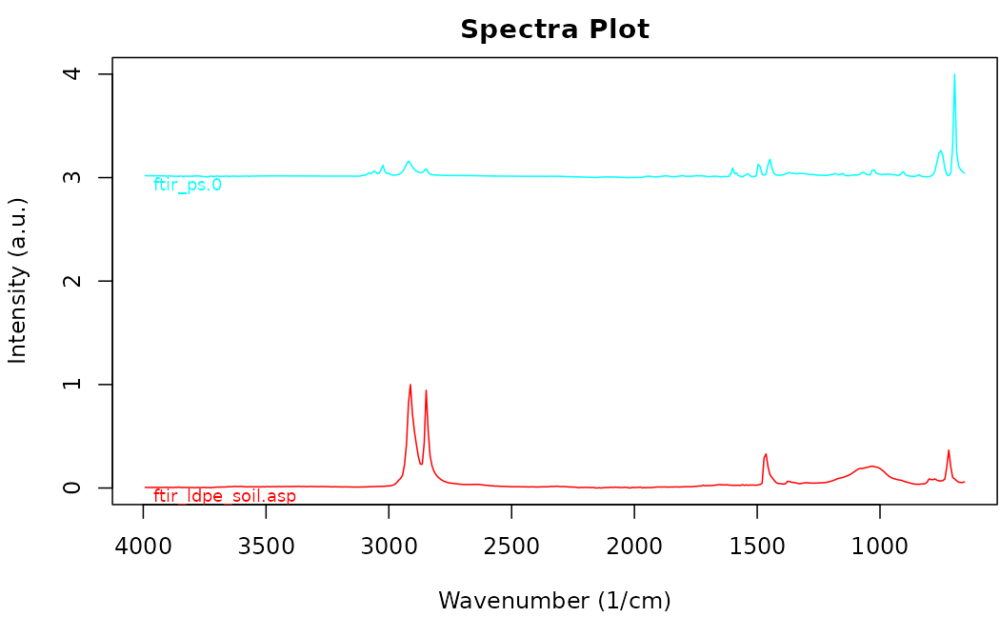
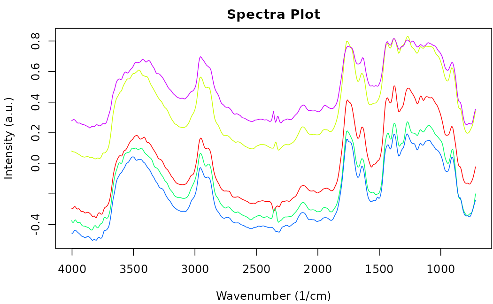

Open Specy Package Tutorial
Win Cowger, Zacharias Steinmetz, Rachel Kozloski, Aleksandra Karapetrova
2025-04-26
Source:vignettes/sop.Rmd
sop.RmdDocument Overview
This document outlines a common workflow for using the Open Specy package and highlights some topics that users are often requesting a tutorial on. If the document is followed sequentially from beginning to end, the user will have a better understanding of every procedure involved in using the Open Specy R package as a tool for interpreting spectra. It takes approximately 45 minutes to read through and follow along with this standard operating procedure the first time. Afterward, knowledgeable users should be able to thoroughly analyze spectra at an average speed of 1 min-1 or faster with the new batch and automated procedures.
The Open Specy R package is the backbone of the Shiny app. The choice is yours as to which you start with, we use both on a regular basis. The tutorial will talk through the R functions you can use to programatically analyze spectra. If you are looking for a tutorial about how to use the app see this tutorial.
Running the App
To get started with the Open Specy user interface, access https://openanalysis.org/openspecy/ or start the Shiny GUI directly from your own computer in R. If you are looking for a tutorial about how to use the app see this tutorial.
run_app()Read Data
The following line of code will read in your data when using the package and interprets which reading function to use based on the file extension.
spectra <- read_any("path/to/your/data")Open Specy allows for upload of native Open Specy .csv, .y(a)ml,
.json, or .rds files. Open Specy and .csv files should always load
correctly but the other file types are still in development, though most
of the time these files work perfectly. In addition, .csv, .asp, .jdx,
.0, .spa, .spc, and .zip files can be imported. .zip files can either
contain multiple files with individual spectra in them of the non-zip
formats or it can contain a .hdr and .dat file that form an ENVI file
for a spectral map. If uploading a .csv file, it is ideal to label the
column with the wavenumbers wavenumber and name the column
with the intensities intensity. Columns besides wavenumber
will be interpreted as unique spectra. If any columns are numbers, the
csv will be interpreted in wide format with the number columns the
wavenumbers and rows containing the unique spectral intensities and
metadata contained in non number columns. Wavenumber units should be
cm-1 or use adj_wave() to correct from
wavelength. Always keep a copy of the original file before alteration to
preserve metadata and raw data for your records.
It is best practice to cross check files in the proprietary software they came from and Open Specy before use in Open Specy. Due to the complexity of some proprietary file types, we haven’t been able to make them fully compatible yet. If your file is not working, please contact the administrator and share the file so that we can work on integrating it.
The specific steps to converting your instrument’s native files to .csv can be found in its software manual or you can check out Spectragryph, which supports many spectral file conversions. For instructions, see Spectragryph Tutorial. Unfortunately the maintainer of Spectragryph passed away and it is unclear how much longer this will be supported.
If you don’t have your own data, you can use a test dataset.
data("raman_hdpe")We also have many onboard files that you can call to test different formats:
spectral_map <- read_extdata("CA_tiny_map.zip") |>
read_any() # preserves some metadata
asp_example <- read_extdata("ftir_ldpe_soil.asp") |>
read_any()
ps_example <- read_extdata("ftir_ps.0") |>
read_any() # preserves some metadata
csv_example <- read_extdata("raman_hdpe.csv") |>
read_any()
json_example <- read_extdata("raman_hdpe.json") |>
read_any() # read in exactly as an OpenSpecy objectYou will notice now that the R package reads in files into an object
with class OpenSpecy. This is a class we created for high
throughput spectral analysis which now also preserves spectral metadata.
You can even create these from scratch if you’d like.
scratch_OpenSpecy <- as_OpenSpecy(x = seq(1000,2000, by = 5),
spectra = data.frame(runif(n = 201)),
metadata = list(file_name = "fake_noise")) Open Specy objects are lists with three components,
wavenumber is a vector of the wavenumber values for the
spectra and corresponds to the rows in spectra which is a
data.table where each column is a set of spectral
intensities. metadata is a data.table which holds
additional information about the spectra. Each row in
metadata corresponds to a column in
spectra.
# Access the wavenumbers
scratch_OpenSpecy$wavenumber
#> [1] 1000 1005 1010 1015 1020 1025 1030 1035 1040 1045 1050 1055 1060 1065 1070
#> [16] 1075 1080 1085 1090 1095 1100 1105 1110 1115 1120 1125 1130 1135 1140 1145
#> [31] 1150 1155 1160 1165 1170 1175 1180 1185 1190 1195 1200 1205 1210 1215 1220
#> [46] 1225 1230 1235 1240 1245 1250 1255 1260 1265 1270 1275 1280 1285 1290 1295
#> [61] 1300 1305 1310 1315 1320 1325 1330 1335 1340 1345 1350 1355 1360 1365 1370
#> [76] 1375 1380 1385 1390 1395 1400 1405 1410 1415 1420 1425 1430 1435 1440 1445
#> [91] 1450 1455 1460 1465 1470 1475 1480 1485 1490 1495 1500 1505 1510 1515 1520
#> [106] 1525 1530 1535 1540 1545 1550 1555 1560 1565 1570 1575 1580 1585 1590 1595
#> [121] 1600 1605 1610 1615 1620 1625 1630 1635 1640 1645 1650 1655 1660 1665 1670
#> [136] 1675 1680 1685 1690 1695 1700 1705 1710 1715 1720 1725 1730 1735 1740 1745
#> [151] 1750 1755 1760 1765 1770 1775 1780 1785 1790 1795 1800 1805 1810 1815 1820
#> [166] 1825 1830 1835 1840 1845 1850 1855 1860 1865 1870 1875 1880 1885 1890 1895
#> [181] 1900 1905 1910 1915 1920 1925 1930 1935 1940 1945 1950 1955 1960 1965 1970
#> [196] 1975 1980 1985 1990 1995 2000
# Access the spectra
scratch_OpenSpecy$spectra
#> runif.n...201.
#> <num>
#> 1: 0.080750138
#> 2: 0.834333037
#> 3: 0.600760886
#> 4: 0.157208442
#> 5: 0.007399441
#> ---
#> 197: 0.906051578
#> 198: 0.772730364
#> 199: 0.383370670
#> 200: 0.999652457
#> 201: 0.349299049
# Access the metadata
scratch_OpenSpecy$metadata
#> x y file_name col_id file_id
#> <int> <int> <char> <char> <char>
#> 1: 1 1 fake_noise runif.n...201. 74944ff090b28e2fe0504f0e85d29ded
# Performs checks to ensure that OpenSpecy objects are adhering to our standards;
# returns TRUE if it passes.
check_OpenSpecy(scratch_OpenSpecy)
#> [1] TRUE
# Checks only the object type to make sure it has OpenSpecy type
is_OpenSpecy(scratch_OpenSpecy)
#> [1] TRUEWe have some generic functions built for inspecting the spectra:
print(scratch_OpenSpecy) # shows the raw object
#> wavenumber runif.n...201.
#> <num> <num>
#> 1: 1000 0.080750138
#> 2: 1005 0.834333037
#> 3: 1010 0.600760886
#> 4: 1015 0.157208442
#> 5: 1020 0.007399441
#> ---
#> 197: 1980 0.906051578
#> 198: 1985 0.772730364
#> 199: 1990 0.383370670
#> 200: 1995 0.999652457
#> 201: 2000 0.349299049
#>
#> $metadata
#> x y file_name col_id file_id
#> <int> <int> <char> <char> <char>
#> 1: 1 1 fake_noise runif.n...201. 74944ff090b28e2fe0504f0e85d29ded
summary(scratch_OpenSpecy) # summarizes the contents of the spectra
#> $wavenumber
#> Length Min. Max. Res.
#> 201 1000 2000 4.975124
#>
#> $spectra
#> Number Min. Intensity Max. Intensity
#> 1 0.004496308 0.9996525
#>
#> $metadata
#> Min. Max.
#> x 1 1
#> y 1 1
#> [1] "x" "y" "file_name" "col_id" "file_id"
head(scratch_OpenSpecy) # shows the top wavenumbers and intensities
#> wavenumber runif.n...201.
#> <num> <num>
#> 1: 1000 0.080750138
#> 2: 1005 0.834333037
#> 3: 1010 0.600760886
#> 4: 1015 0.157208442
#> 5: 1020 0.007399441
#> 6: 1025 0.466393497Save Data
Open Specy objects can be saved most accurately as .csv, .rds, .yml, or .json files. .rds will be the most reproducible as it is a native R file format and floating point errors can happen with .csv, .json, or .yml.
write_spec(scratch_OpenSpecy, "test_scratch_OpenSpecy.yml", digits = 5)
write_spec(scratch_OpenSpecy, "test_scratch_OpenSpecy.json", digits = 5)
write_spec(scratch_OpenSpecy, "test_scratch_OpenSpecy.csv", digits = 5)Format Conversions
Another great spectroscopy R package is hyperSpec. We
actually depend on their functions for several of ours. They are
currently making some awesome new features and we want to integrate well
with them so that both packages can be easily used together. That is why
we created the as_hyperSpec function and made sure that
as_OpenSpecy can convert from hyperSpec
objects.
hyperspecy <- as_hyperSpec(scratch_OpenSpecy)Visualization
Spectra
In R, we have two ways to visualize your spectra, one is quick and efficient and the other is interactive. Here is an example of quick and efficient plotting.
plot(scratch_OpenSpecy) # quick and efficient
This is an example of an interactive plot. You can plot two different datasets simultaneously to compare.
# This will min-max normalize your data even if it isn't already but are not
# changing your underlying data
plotly_spec(scratch_OpenSpecy, json_example)Maps
Spectral maps can also be visualized as overlaid spectra but in
addition the spatial information can be plotted as a heatmap. It is
important to note that when multiple spectra are uploaded in batch they
are prescribed x and y coordinates, this can
be helpful for visualizing summary statistics and navigating vast
amounts of data but shouldn’t be confused with data which actually has
spatial coordinates.
In R the user can control what values form the colors of the heatmap
by specifying z, it is handy to put the information you
want in the metadata for this reason. This example just shows the x
values of the spectra.
heatmap_spec(spectral_map,
z = spectral_map$metadata$x)An interactive plot of the heatmap and spectra overlayed can be
generated with the interactive_plot() function. A user can
hover over the heatmap to identify the next row id they are interested
in and update the value of select to see that spectrum.
interactive_plot(spectral_map, select = 100, z = spectral_map$metadata$x)Combining OpenSpecy Objects
Sometimes you have several OpenSpecy objects that you want to combine
into one. The easiest way to do that is by having spectra which all are
in the same exact format with the same series of wavenumbers. The
default settings of c_spec assume that is the case.
If you have different wavenumber ranges for the spectra you want to
combine, you can set range = "common" and res
equal to the wavenumber resolution you want and the function will
collapse all the spectra to whatever their common range is using linear
interpolation.

If you want to plot them with standardized offset y values you can do so with the plot variables.

Filtering OpenSpecy Objects
OpenSpecy objects can have any number of spectra in them. To create
an OpenSpecy with a subset of the spectra that is in an Open Specy
object you can use the filter_spec function. Filtering is
allowed by index number, name, or using a logical vector. Filtering will
update the spectra and metadata items of the
OpenSpecy but not the wavenumber.
# Extract the 150th spectrum by index number.
filter_spec(spectral_map, 150)
# Extract the 150th spectrum by spectrum name.
filter_spec(spectral_map, "9_5")
# Extract the 150th spectrum by logical test.
filter_spec(spectral_map, spectral_map$metadata$x == 9 & spectral_map$metadata$y == 5)
#Test that they are the same.
identical(filter_spec(spectral_map, 150), filter_spec(spectral_map, "9_5"))
identical(filter_spec(spectral_map, 150), filter_spec(spectral_map, spectral_map$metadata$y == 9 & spectral_map$metadata$x == 5))Sampling OpenSpecy Objects
Sometimes you have a large suite of examples of spectra of the same
material and you want to reduce the number of spectra you run through
the analysis for simplicity or you are running simulations or other
procedures that require you to first sample from the spectra contained
in your OpenSpecy objects before doing analysis. The
sample_spec function serves this purpose.
sample_spec(spectral_map, size = 5) |>
plot()
Processing
The goal of processing is to increase the signal to noise ratio (S/N) of the spectra and remove unwanted artifacts without distorting the shape, position, or relative size of the peaks. After loading data, you can process the data using intensity adjustment, baseline subtraction, smoothing, flattening, and range selection. The default settings is an absolute first derivative transformation. It is really powerful for many data issues. It does something similar to smoothing, baseline subtraction, and intensity correction simultaneously and really quickly.
The process_spec() function is a monolithic function for
all processing procedures which is optimized by default to result in
high signal to noise in most cases, same as the app.
processed <- process_spec(raman_hdpe)You can compare the processed and unprocessed data in an overlay plot.
plotly_spec(raman_hdpe, processed)We want people to use the process_spec() function for
most processing operations. All other processing functions can be tuned
using its parameters in the single function see
?process_spec() for details. However, we recognize that
nesting of functions and order of operations can be useful for users to
control so you can also use individual functions for each operation if
you’d like. See explanations of each processing sub-function below.
Threshold Signal and Noise
Considering whether you have enough signal to analyze spectra in the
first place is important, because if you don’t have enough signal you
should recollect the spectrum. Classical spectroscopy would recommend
your highest peak to be at least 10 times greater than the baseline of
your processed spectra before you begin analysis. Setting a threshold
can assist in standardized differentiation between low and high quality
spectral. If your spectra is below that threshold even after processing,
you may want to consider recollecting it. In practice, we are rarely
able to collect spectra of that good quality and more often use 4 as a
lower bound with anything below 2 being completely unusable. The
“run_sig_over_noise” metric searches your spectra for high
and low regions and conducts division on them to derive the signal to
noise ratio. In the example below you can see that our signal to noise
ratio is increased by the processing, the goal of processing is
generally to maximize the signal to noise ratio. If you know where your
signal region and noise regions are, you can specify them with
sig_min, sig_max, noise_min, and
noise_max.
# Automatic signal to noise ratio comparison
sig_noise(processed, metric = "run_sig_over_noise") >
sig_noise(raman_hdpe, metric = "run_sig_over_noise")
#Manual signal to noise ratio calculation
sig_noise(processed, metric = "sig_over_noise", sig_min = 2700, sig_max = 3000, noise_min = 1500, noise_max = 2500) >
sig_noise(raman_hdpe, metric = "sig_over_noise", sig_min = 2700, sig_max = 3000, noise_min = 1500, noise_max = 2500)If analyzing spectra in batch, we recommend looking at the heatmap
and optimizing the percent of spectra that are above your signal to
noise threshold to determine the correct settings instead of looking
through spectra individually. Setting the min_sn will
threshold the heatmap image to only color spectra which have a
sn value over the threshold.
#Remove CO2 region
spectral_map_p <- spectral_map |>
process_spec(flatten_range = T)
#Calculate signal times noise
spectral_map_p$metadata$sig_noise <- sig_noise(spectral_map_p, metric = "run_sig_over_noise")
#Plot result
heatmap_spec(spectral_map_p, sn = spectral_map_p$metadata$sig_noise, min_sn = 5)Intensity Adjustment
Most functions in Open Specy assume that intensity units are in absorbance units and Open Specy can adjust reflectance or transmittance spectra to absorbance units. The transmittance adjustment uses the calculation which does not correct for system or particle characteristics. The reflectance adjustment uses the Kubelka-Munk equation .
This is the respective R code for a scenario where the spectra doesn’t need intensity adjustment:
trans_raman_hdpe <- raman_hdpe
trans_raman_hdpe$spectra <- 2 - trans_raman_hdpe$spectra^2
rev_trans_raman_hdpe <- trans_raman_hdpe |>
adj_intens(type = "transmittance")
plotly_spec(trans_raman_hdpe, rev_trans_raman_hdpe)Conforming
Conforming spectra is essential before comparing to a reference library and can be useful for summarizing data when you don’t need it to be highly resolved spectrally. We set the default spectral resolution to 5 because this tends to be pretty good for a lot of applications and is in between 4 and 8 which are commonly used wavenumber resolutions.
conform_spec(raman_hdpe, res = 8) |> # Convert res to 8 wavenumbers.
summary()
# Force one spectrum to have the exact same wavenumbers as another
conform_spec(asp_example, range = ps_example$wavenumber, res = NULL) |>
summary()Smoothing
The Savitzky-Golay filter is used for smoothing. Higher polynomial numbers lead to more wiggly fits and thus less smoothing, lower numbers lead to more smooth fits. The SG filter is fit to a moving window of 11 data points by default where the center point in the window is replaced with the polynomial estimate. Larger windows will produce smoother fits. The derivative order is set to 1 by default which transforms the spectra to their first derivative. A zero order derivative will have no derivative transformation and only apply smoothing. When smoothing is done well, peak shapes and relative heights should not change. The absolute value is primarily useful for first derivative spectra where the result looks similar to absorbance units and is easy to have intuition about.
Examples of smoothing:
none <- make_rel(raman_hdpe)
p1 <- smooth_intens(raman_hdpe, polynomial = 1, derivative = 0, abs = F)
p4 <- smooth_intens(raman_hdpe, polynomial = 4, derivative = 0, abs = F)
c_spec(list(none, p1, p4)) |>
plot()
Sample raman_hdpe spectrum with different smoothing
polynomials.
Derivative transformation can be done with the same function.
none <- make_rel(raman_hdpe)
window <- calc_window_points(raman_hdpe, 100) #Calculate the number of points needed for a 190 wavenumber window.
d1 <- smooth_intens(raman_hdpe, derivative = 1, window = window, abs = T)
d2 <- smooth_intens(raman_hdpe, derivative = 2, window = window, abs = T)
c_spec(list(none, d1, d2)) |>
plot()
Sample raman_hdpe spectrum with different derivatives.
Baseline Correction
The goal of baseline correction is to get all non-peak regions of the
spectra to zero absorbance. The higher the polynomial order, the more
wiggly the fit to the baseline. If the baseline is not very wiggly, a
more wiggly fit could remove peaks which is not desired. The baseline
correction algorithm used in Open Specy is called “iModPolyfit” (Zhao et
al. 2007). This algorithm iteratively fits polynomial equations of the
specified order to the whole spectrum. During the first fit iteration,
peak regions will often be above the baseline fit. The data in the peak
region is removed from the fit to make sure that the baseline is less
likely to fit to the peaks. The iterative fitting terminates once the
difference between the new and previous fit is small. An example of a
good baseline fit below. Manual baseline correction can also be
specified by providing a baseline OpenSpecy object. There
are many fine tuning options that can be chosen, see
?subtr_baseline() for more details.
alternative_baseline <- smooth_intens(raman_hdpe, polynomial = 1, window = 51,
derivative = 0, abs = F, make_rel = F) |>
flatten_range(min = 2700, max = 3200, make_rel = F) #Manual baseline with heavily smoothed spectra
none <- make_rel(raman_hdpe) #raw
d <- subtr_baseline(raman_hdpe, type = "manual",
baseline = alternative_baseline) #manual subtraction
d8 <- subtr_baseline(raman_hdpe, degree = 8) #standard imodpolyfit
dr <- subtr_baseline(raman_hdpe, refit_at_end = T) #optionally retain baseline noise with refitting
c_spec(list(none, d, d8, dr)) |>
plot(offset = 0.25)
Sample raman_hdpe spectrum with different degrees of
background subtraction (Cowger et al., 2020).
Range Selection
Sometimes an instrument operates with high noise at the ends of the spectrum and, a baseline fit produces distortions, or there are regions of interest for analysis. Range selection accomplishes those goals. Many of these issues can be resolved during spectral collection by specifying a wavenumber range which is well characterized by the instrument. Multiple ranges can be specified simultaneously.
none <- make_rel(raman_hdpe)
#Specify one range
r1 <- restrict_range(raman_hdpe, min = 1000, max = 2000) |>
conform_spec(range = none$wavenumber, res = NULL, allow_na = T)
#Specify multiple ranges
r2 <- restrict_range(raman_hdpe, min = c(1000, 1800), max = c(1200, 2000)) |>
conform_spec(range = none$wavenumber, res = NULL, allow_na = T)
compare_ranges <- c_spec(list(none, r1, r2), range = "common")
# Common argument crops the ranges to the most common range between the spectra
# when joining.
plot(compare_ranges)
Sample raman_hdpe spectrum with different degrees of range
restriction.
Flattening Ranges
Sometimes there are peaks that really shouldn’t be in your spectra
and can distort your interpretation of the spectra but you don’t
necessarily want to remove the regions from the analysis because you
believe those regions should exist and be flat instead of having a peak.
One way to deal with this is to replace the peak values with the mean of
the values around the peak. This is the purpose of the
flatten_range function. By default it is set to flatten the
CO2 region for FTIR spectra because that region often needs to be
flattened when atmospheric artifacts occur in spectra. Like
restrict_range, the R function can accept multiple
ranges.
single <- filter_spec(spectral_map, 120) # Function to filter spectra by index
# number or name or a logical vector.
none <- make_rel(single)
f1 <- flatten_range(single) #default flattening the CO2 region.
f2 <- flatten_range(single, min = c(1000, 2500), max = c(1200, 3000)) #multple range example
compare_flats <- c_spec(list(none, f1, f2), range = "common")
plot(compare_flats, offset = 0.25)
Sample raman_hdpe spectrum with different degrees of
background subtraction (Cowger et al., 2020).
Min-Max Normalization
Often we regard spectral intensities as arbitrary and min-max
normalization allows us to view spectra on the same scale without
drastically distorting their shapes or relative peak intensities. In the
package, most of the processing functions will min-max transform your
spectra by default if you do not specify otherwise with
make_rel = FALSE.
Identifying Spectra
Reading Libraries
Reference libraries are spectra with known identities. The Open Specy library now has over 30,000 spectra in it and is getting so large that we cannot fit it within the R package size limit of 5 MB. We host the reference libraries on OSF and have a function to pull the libraries down automatically. Running get_lib by itself will download all libraries to your package directory or you can specify which libraries you want and where you want them.
get_lib(type = "derivative")After download you can load the libraries into your active
environment one at a time as OpenSpecy objects. You can use
any Open Specy object as a library which makes it easy to work with and
create libraries because everything we explained earlier applies to
them.
lib <- load_lib(type = "derivative")Matches
Before attempting to use a reference library to identify spectra it
is really important to understand what format the reference library is
in. All the OpenSpecy reference libraries are in Absorbance units.
derivative has been absolute first derivative transformed,
nobaseline has been baseline corrected, raw is
the rawest form of the reference spectra (not recommended except for
advanced uses). The previously mentioned libraries all have Raman and
FTIR spectra in them. mediod_{derivative or nobasline} is
the mediod compressed library version of the libraries and has only
critical spectra in it, model{derivative or nobasline} is
an exception because it is a multinomial regression approach for
identification. In this example we use the data("test_lib")
which is a subsampled version of the derivative library and
data("raman_hdpe") which is an unprocessed Raman spectrum
in absorbance units of HDPE plastic.
data("test_lib")
data("raman_hdpe")
processed <- process_spec(x = raman_hdpe,
conform_spec = F, #We will conform during matching.
smooth_intens = T #Conducts the default derivative transformation.
)
# Check to make sure that the signal to noise ratio of the processed spectra is
# greater than 10.
print(sig_noise(processed) > 10)
#Plot to assess the accuracy of the processing visually
plotly_spec(raman_hdpe, processed)After your spectra is processed similarly to the library
specifications, you can identify the spectra using
match_spec(). Whichever library you choose, you need to get
your spectra into a similar enough format to use for comparison. The
add_library_metadata and add_object_metadata
options specify the column name in the metadata that you want to add
metadata from and top_n specifies how many matches you
want. In this example we just identified a single spectrum with the
library but you can also send an OpenSpecy object with multiple spectra.
The output matches is a data.table with at least 3 columns,
object_id tells you the column names of the spectra in
x, library_id tells you the column names from
the library that it matched to. match_val is the value of
the Pearson correlation coefficient (default) or other correlation if
specified in ... or if using the model identification
option match_val will be the model confidence. The output
in this example returned the correct material type, HDPE, as the top
match. If using Pearson correlation, 0.7 is a good threshold to use for
a positive ID. In this example, only our top match is greater than the
threshold so we would disregard the other matches. If no matches were
above our threshold, we would proclaim that the spectrum is of an
unknown identity. You’ll also notice in this example that we matched to
a library with both Raman and FTIR spectra but the Raman spectra had the
highest hits, this is the rationale for lazily matching to a library
with both. If you want to just match to a library with FTIR or Raman
spectra, you can first filter the library using
filter_spec() using SpectrumType.
matches <- match_spec(x = processed, library = test_lib, conform = T,
add_library_metadata = "sample_name", top_n = 5)[order(match_val, decreasing = T)]
print(matches[,c("object_id", "library_id", "match_val", "SpectrumType",
"SpectrumIdentity")])Library Metadata
The libraries we have created have over 100 variables of metadata in
them and this can be onerous to read through especially given that many
of the variables are NA values. We created
get_metadata() to remedy this by removing columns from the
metadata which are all blank values. The function below will return the
metadata for the top match in matches. Remember, similar
filter_spec(), you can specify logic for more
than one thing at a time.
get_metadata(x = test_lib, logic = matches[[1,"library_id"]], rm_empty = T)Plot Matches
Overlaying unknown spectra and the best matches can be extremely useful to identify peaks that don’t fit to the reference library which may need further investigation. The example below shows great correspondence between the best match and the unknown spectrum. All major peaks are accounted for and the correct relative height. There are two small peaks in the unknown spectrum near 500 that are not accounted for which could be investigated further but we would call this a positive id to HDPE.
plotly_spec(processed, filter_spec(test_lib, logic = matches[[1,"library_id"]]))Characterizing Particles
Sometimes the spectroscopy task we want to perform is to identify particles in a spectral map. This is especially common for microplastic analysis where a spectral map is used to image a sample and spectral information is used to differentiate microplastic particles from nonplastic particles. In addition to the material id, one often wants to measure the shape and size of the particles. In a brute force technique, one could first identify every spectrum in the map, then use thresholding and image analysis to measure the particles. However, more often than not, particles are well separated on the image surface and background spectra is quite different from particle spectra and therefore we can use thresholding a priori to identify and measure the particles, then pass an exemplary spectrum for each particle to the identification routine. It is important to note here that this is at the bleeding edge of theory and technique so we may be updating these functions in the near future.
Brute Force
#Test library
data("test_lib")
#Example hyperspectral image with one cellulose acetate particle in the middle of it.
test_map <- read_any(read_extdata("CA_tiny_map.zip"))
#Process the map to conform to the library.
test_map_processed <- process_spec(test_map, conform_spec_args = list(
range = test_lib$wavenumber, res = NULL)
)
#Identify every spectrum in the map.
identities <- match_spec(test_map_processed, test_lib, order = test_map,
add_library_metadata = "sample_name", top_n = 1)
#Relabel any spectra with low correlation coefficients.
features <- ifelse(identities$match_val > 0.7,
tolower(identities$polymer_class), "unknown")
#Use spectra identities to identify particle regions as those that have the same material type and are touching.
id_map <- def_features(x = test_map_processed, features = features)
id_map$metadata$identities <- features
# Also should probably be implemented automatically in the function when a
# character value is provided.
heatmap_spec(id_map, z = id_map$metadata$identities)
# Collapses spectra to their median for each particle
test_collapsed <- collapse_spec(id_map)
# Plot spectra for each identified particle
plot(test_collapsed, offset = 1, legend_var = "feature_id")A Priori Particle Thresholding
# Read in test library
data("test_lib")
# Example dataset with one cellulose acetate particle.Conduct spatial smoothing to average each spectrum using adjacent spectra.
test_map <- read_any(read_extdata("CA_tiny_map.zip"),
spectral_smooth = T,
sigma = c(1, 1, 1))
# Characterize the signal times noise to determine where particle regions are.
snr <- sig_noise(test_map, metric = "sig_times_noise")
# Use this to find your particles and the idal signal times noise value to use for thresholding.
heatmap_spec(test_map, z = snr)
# Define the feature regions based on the threshold. Pixels from the background in the heatmap above were below 0.05 while my particle's pixels were above so I set snr > 0.05.
id_map <- def_features(x = test_map, features = snr > 0.05)
# Check that the thresholding worked as expected. Here we see a single particle region identified separate from the background.
heatmap_spec(id_map, z = id_map$metadata$feature_id)
# Collapse the spectra to their medians based on the threshold. Important to
# note here that the particles with id -88 are anything from the FALSE values
# so they should be your background.
collapsed_id_map <- id_map |>
collapse_spec()
# Process the collapsed spectra to have the same transformation and units as the library.
id_map_processed <- process_spec(collapsed_id_map, conform_spec_args = list(
range = test_lib$wavenumber, res = NULL)
)
# Check the spectra for the background and particle. Background has considerable signal in it too suggesting double bounce along the edges of the particle.
plot(id_map_processed, offset = 1, legend_var = "feature_id")
# Get the matches of the collapsed spectra for the particles.
matches <- match_spec(id_map_processed, test_lib,
add_library_metadata = "sample_name", top_n = 1)References
Chabuka BK, Kalivas JH (2020). “Application of a Hybrid Fusion Classification Process for Identification of Microplastics Based on Fourier Transform Infrared Spectroscopy.” Applied Spectroscopy, 74(9), 1167–1183. doi: 10.1177/0003702820923993.
Cowger W, Gray A, Christiansen SH, De Frond H, Deshpande AD, Hemabessiere L, Lee E, Mill L, et al. (2020). “Critical Review of Processing and Classification Techniques for Images and Spectra in Microplastic Research.” Applied Spectroscopy, 74(9), 989–1010. doi: 10.1177/0003702820929064.
Cowger W, Steinmetz Z, Gray A, Munno K, Lynch J, Hapich H, Primpke S, De Frond H, Rochman C, Herodotou O (2021). “Microplastic Spectral Classification Needs an Open Source Community: Open Specy to the Rescue!” Analytical Chemistry, 93(21), 7543–7548. doi: 10.1021/acs.analchem.1c00123.
Primpke S, Wirth M, Lorenz C, Gerdts G (2018). “Reference Database Design for the Automated Analysis of Microplastic Samples Based on Fourier Transform Infrared (FTIR) Spectroscopy.” Analytical and Bioanalytical Chemistry, 410(21), 5131–5141. doi: 10.1007/s00216-018-1156-x.
Renner G, Schmidt TC, Schram J (2017). “A New Chemometric Approach for Automatic Identification of Microplastics from Environmental Compartments Based on FT-IR Spectroscopy.” Analytical Chemistry, 89(22), 12045–12053. doi: 10.1021/acs.analchem.7b02472.
Savitzky A, Golay MJ (1964). “Smoothing and Differentiation of Data by Simplified Least Squares Procedures.” Analytical Chemistry, 36(8), 1627–1639.
Zhao J, Lui H, McLean DI, Zeng H (2007). “Automated Autofluorescence Background Subtraction Algorithm for Biomedical Raman Spectroscopy.” Applied Spectroscopy, 61(11), 1225–1232. doi: 10.1366/000370207782597003.